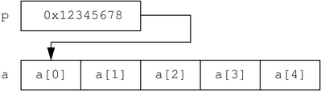

Solaris Dynamic Tracing Guide
|
|||
|
2. Types, Operators, and Expressions Array Declarations and Storage 8. Type and Constant Definitions 34. Statically Defined Tracing for User Applications |
Pointer and Array RelationshipPointers and arrays have a special relationship in D, just as they do in ANSI-C. An array is represented by a variable that is associated with the address of its first storage location. A pointer is also the address of a storage location with a defined type, so D permits the use of the array [ ] index notation with both pointer variables and array variables. For example, the following two D fragments are equivalent in meaning: p = &a[0]; trace(a[2]); trace(p[2]); In the left-hand fragment, the pointer p is assigned to the address of the first array element in a by applying the & operator to the expression a[0]. The expression p[2] traces the value of the third array element (index 2). Because p now contains the same address associated with a, this expression yields the same value as a[2], shown in the right-hand fragment. One consequence of this equivalence is that C and D permit you to access any index of any pointer or array. Array bounds checking is not performed for you by the compiler or DTrace runtime environment. If you access memory beyond the end of an array's predefined value, you will either get an unexpected result or DTrace will report an invalid address error, as shown in the previous example. As always, you can't damage DTrace itself or your operating system, but you will need to debug your D program. The difference between pointers and arrays is that a pointer variable refers to a separate piece of storage that contains the integer address of some other storage. An array variable names the array storage itself, not the location of an integer that in turn contains the location of the array. This difference is illustrated in the following diagram: Figure 5-2 Pointer and Array StorageThis difference is manifested in the D syntax if you attempt to assign pointers and scalar arrays. If x and y are pointer variables, the expression x = y is legal; it simply copies the pointer address in y to the storage location named by x. If x and y are scalar array variables, the expression x = y is not legal. Arrays may not be assigned as a whole in D. However, an array variable or symbol name can be used in any context where a pointer is permitted. If p is a pointer and a is an array, the statement p = a is permitted; this statement is equivalent to the statement p = &a[0]. |
||
|